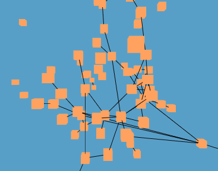

Hi. My name is Joshua Moore. I obsess over graphs, and how to visualize them. I’m a software engineer by training, but currently work as a Systems Engineer for Hirschi Masonry in North Las Vegas. Should you have a question about any of these projects, don’t hesitate to send me an email. Enjoy the demos!
Projects
fourd.cpp.js
 <dynamic-graph>live/code is a dynamic force directed graph visualization for the browser. It represents a compromise between my Math skill, and the desire to get this product out the door. Using this custom element, you can display graphs on your webpage.
Social Cartography
 Social Cartography is a prototype for a tool for visually displaying social hierarchies. It works by entering pairs of subentities and superentities, in the form sub@super. Repeat this process, double click the labels to change pictures, and watch the graph grow as you enter information.
Social Cartography is a prototype for a tool for visually displaying social hierarchies. It works by entering pairs of subentities and superentities, in the form sub@super. Repeat this process, double click the labels to change pictures, and watch the graph grow as you enter information.
Chess
 This is a free online version of a chess board (live), no registration required. Simply enter a unique name in the top bar and have your partner enter the same name. Now you two are connected, and can see each other move the pieces. Written with expressjs and socket.io, and hosted on heroku.
This is a free online version of a chess board (live), no registration required. Simply enter a unique name in the top bar and have your partner enter the same name. Now you two are connected, and can see each other move the pieces. Written with expressjs and socket.io, and hosted on heroku.
jquery.kauth.js
 jquery.kauth.js (code) is a client side oauth 1.0 implementation based strictly on RFC 5849. Knotis, Inc. generously donated the code back to me after it was no longer needed.
jquery.kauth.js (code) is a client side oauth 1.0 implementation based strictly on RFC 5849. Knotis, Inc. generously donated the code back to me after it was no longer needed.
Genetic Programming
 Genetic programming (ipynb) is a fun project to familiarize myself with matplotlib's pyplot.
Genetic programming (ipynb) is a fun project to familiarize myself with matplotlib's pyplot.